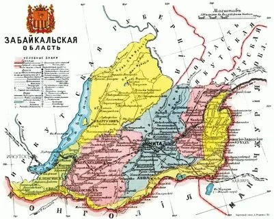

⚔️ Семёнов в Забайкалье
Как атаман Семёнов действовал в Забайкалье и почему его имя помнят до сих пор

Атаман Григорий Семёнов
🔥 Восстание против большевиков
В декабре 1917 года Григорий Семёнов поднял восстание против новой власти большевиков в Забайкалье. Его поддержали местные казаки, недовольные политикой большевиков: реквизициями, мобилизациями и разрушением традиционного уклада.

Карта Забайкалья, 1914 год
Семёнов быстро собрал отряд добровольцев и начал боевые действия против красных гарнизонов. Его штаб располагался в Маньчжурии, но основные рейды он проводил на территории Забайкалья, двигаясь вдоль железной дороги.
🎌 Особый Маньчжурский отряд (ОМО)
Главной силой Семёнова стал Особый Маньчжурский отряд, сформированный в конце 1917 года. Он состоял из казаков, офицеров-белогвардейцев, монгольских и бурятских добровольцев, а также японских советников.
Япония активно поддерживала Семёнова оружием, деньгами и инструкторами — она видела в нём инструмент для расширения своего влияния на Дальнем Востоке. Благодаря этой поддержке отряды Семёнова представляли серьёзную угрозу для красных партизан.
Семёновцы отличались особой жестокостью: пленных партизан расстреливали без суда, деревни, подозреваемые в укрывательстве красных, сжигались. Это породило ответную жестокость со стороны партизан, и Забайкалье погрузилось в кровавый хаос.
🪦 Трагедия у Базаново
В 1919 году отряды Семёнова проводили карательные операции против красных партизан, скрывавшихся в лесах и деревнях Александрово-Заводского района. Одно из таких столкновений произошло вблизи деревни Базаново.
По рассказам местных жителей, на сопке за лесом были расстреляны 37 партизан. Их схватили во время рейда, вывезли за деревню и казнили без суда. Позже на этом месте была установлена братская могила — скромный памятник, который и сегодня можно найти в трёх километрах от Базаново.
🏃 Отступление из Забайкалья
К концу 1920 года Красная армия начала масштабное наступление в Забайкалье. Отряды Семёнова, истощённые боями и потерявшие поддержку японцев, начали отступать. Сам атаман покинул Забайкалье и ушёл в Маньчжурию.
Полная биография атамана Семёнова — его происхождение, участие в Первой мировой войне, эмиграция и казнь — описана в отдельной статье «Атаман Григорий Семёнов: биография».